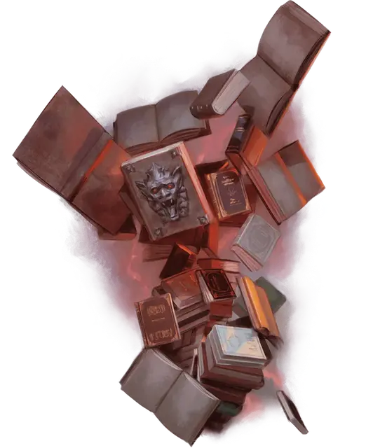

Рой оживлённых книг
Swarm of Animated Books
Средний рой крошечных Конструктов

Класс Доспеха 12 (природный доспех)
Хиты 22 (4к8 + 4)
Скорость 0 футов, летая 30 футов (парит)
| мод | спас | ||
|---|---|---|---|
| СИЛ | 10 | +0 | +0 |
| ЛОВ | 13 | +1 | +1 |
| ТЕЛ | 12 | +1 | +1 |
| мод | спас | ||
|---|---|---|---|
| ИНТ | 1 | −5 | −5 |
| МДР | 10 | +0 | +0 |
| ХАР | 1 | −5 | −5 |
Уязвимость к урону огонь
Иммунитет к урону психическая энергия, яд
Иммунитет к состояниям окаменение, опутанность, отравление, сбивание с ног, захват, паралич, очарование, испуг, ошеломление, истощение
Чувства слепое зрение 60 футов (слеп за его пределами), пассивное Восприятие 10
Опасность 1/4 (50 опыта)
Бонус мастерства +2
Особенности
Обманчивый объект. Если рой неподвижен в начале боя, он получает преимущество на бросок инициативы. Более того, если существо не заметило его движений или действий, это существо должно преуспеть в проверке Сл 15 Мудрости (Восприятие) для определения того, что рой — оживлённый.
Рой. Рой может занимать пространство другого существа, и наоборот, и рой может перемещаться через любой проход, достаточно большой для объекта высотой 1 фут, шириной 8 дюймов и толщиной 2 дюйма. Рой не может восстанавливать хиты и получать временные хиты.
Действия
Удар книгой. Рукопашная атака оружием: +3 к попаданию, досягаемость 0 фт., одна цель в пространстве роя. Попадание: 6 (2к4 + 1) дробящего урон или 3 (1к4 + 1) дробящего урона, если у роя половина хитов или меньше.